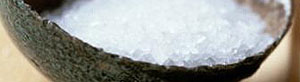

Poulet au sel (nach Bocuse)
5 von 6mit alufolie eine gusseisenform mit möglichst hohem rand auskleiden. genügend folie für die bedeckung
des poulets miteinberechnen. den boden mit ca 1 kg grobkörnigem meeressalz bedecken und das
poulet darauf setzen. mit weiteren 3 kg salz bestreuen und mit der restlichen folie gut verschliessen.
bei mind. 250 grad knapp 1 1/2 std garen. die folie abnehmen und das poulet mit einer kelle aufbrechen.
